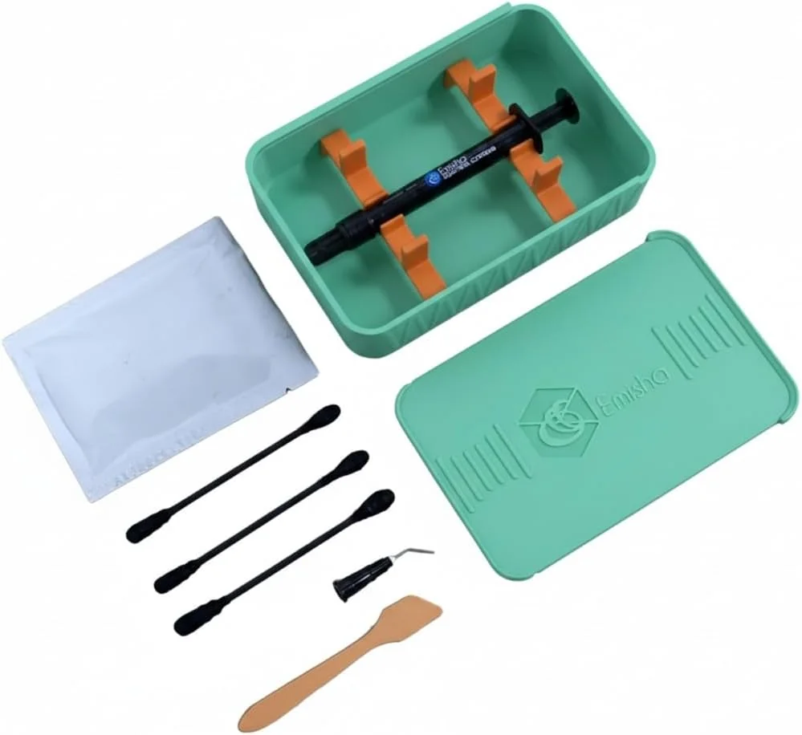
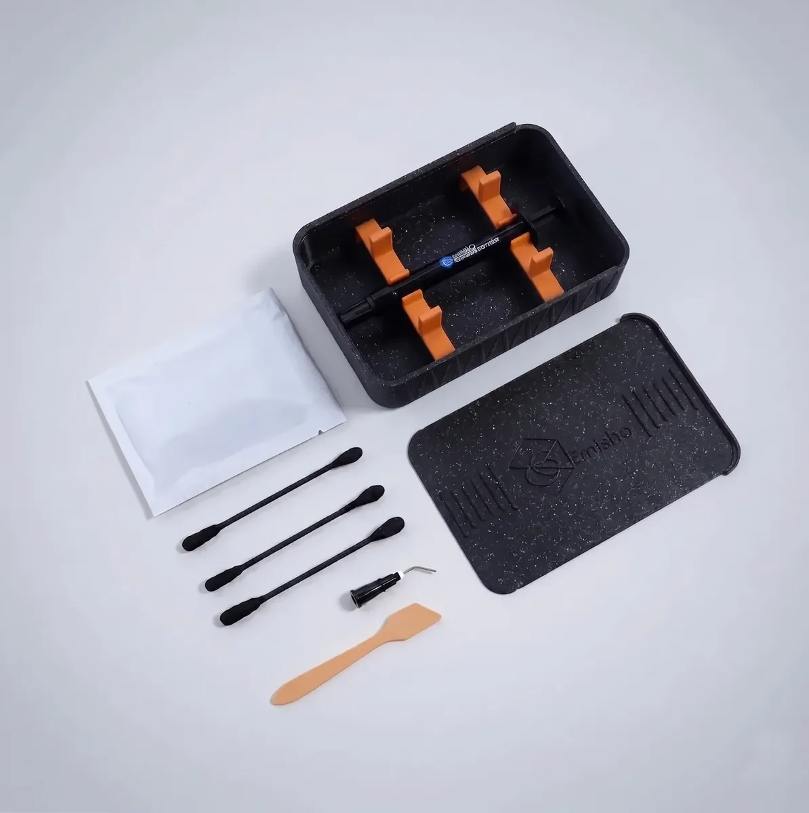
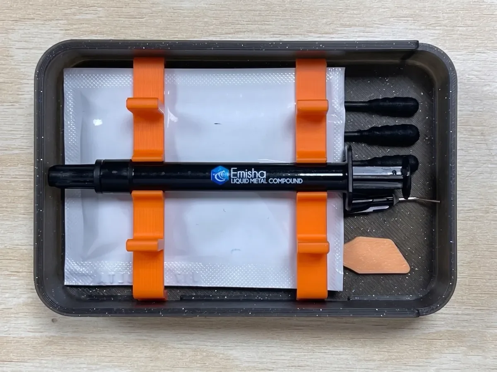

Emisha Liquid Ultra
Metal líquido de aleación galio-indio. Conduce alrededor de 38 W/m·K, varias veces lo de una pasta térmica normal. Se usa en PS5, Xbox, laptops de gama alta y equipos de escritorio que se calientan de más.

Elige la cantidad
Una aplicación en PS5 consume alrededor de 0.3 g. Calcula unas tres aplicaciones por cada gramo.
Precios de referencia en pesos mexicanos. El precio final, las promociones y los tiempos de entrega los define cada marketplace al momento de la compra.

Edición Mundial
Es el mismo compuesto y el mismo desempeño térmico. Lo que cambia es el estuche. La edición Mundial trae uno impreso en filamento negro cósmico, con destellos metálicos en el acabado y los mismos clips de sujeción naranjas del kit estándar.
Solo la manejamos en presentación de 1 g y en cantidad limitada.
Qué incluye cada kit
Trae todo para aplicarlo. No tienes que comprar herramienta aparte.
- Jeringa dosificadaCon la cantidad exacta de metal líquido
- Aguja aplicadoraPunta metálica de precisión, enroscable
- 3 aplicadoresPunta suave para esparcir sin rayar
- EspátulaPara nivelar la capa sobre el IHS
- Toallita de limpiezaSellada, para preparar la superficie
- Estuche rígidoImpreso en 3D, con clips de sujeción
Especificaciones
| Nombre químico | Aleación galio–indio (GaIn) |
|---|---|
| Conductividad térmica | ≈ 38 W/m·K |
| Estado físico | Líquido metálico > 15.7 °C |
| Punto de fusión | ≈ 15.7 °C |
| Punto de ebullición | > 1300 °C |
| Densidad | ≈ 6.44 g/cm³ a 25 °C |
| Viscosidad dinámica | 0.0021 Pa·s |
| Color | Plateado metálico brillante |
| Olor | Inodoro |
| Inflamabilidad | No inflamable |
| Código de producto | E-LM-U-1GR |
Sobre qué se puede aplicar
| Cobre y cobre niquelado | Recomendado |
|---|---|
| Níquel | Recomendado |
| IHS de CPU / APU | Recomendado |
| Aluminio y sus aleaciones | No usar |
| Estaño, zinc, oro, plata | Forma amalgama |
| Recipientes de vidrio | No almacenar |
Al solidificarse por debajo de 15.7 °C el material se expande alrededor de 0.3 % en volumen. Consérvalo en su envase original de plástico PE o PP, nunca en vidrio.
Cómo se aplica
-
Verifica el material del disipador
Si la base es de aluminio desnudo, detente: usa una pasta térmica convencional. Cobre o niquelado, adelante.
-
Limpia ambas superficies
Retira la pasta anterior con la toallita incluida y termina con alcohol isopropílico. La superficie debe quedar seca y sin residuos.
-
Protege el entorno del socket
Cubre los componentes cercanos. El metal líquido es conductor eléctrico y cualquier escurrimiento puede provocar un corto.
-
Dosifica una gota mínima
Alrededor de 0.3 g bastan para un APU de PS5. Es mucho menos material del que usarías con pasta térmica.
-
Esparce una capa delgada y uniforme
Con el aplicador de punta suave, extiende hasta cubrir el área con una película apenas visible. No debe sobrar producto en los bordes.
-
Monta el disipador y verifica temperaturas
Aprieta en cruz con la presión especificada por el fabricante y confirma el resultado con una prueba de carga.

Preguntas frecuentes
¿Qué diferencia hay entre el metal líquido y una pasta térmica normal?
Una pasta térmica convencional a base de silicona y cerámica ronda los 3 a 12 W/m·K. Emisha Liquid Ultra es una aleación de galio e indio y conduce alrededor de 38 W/m·K, varias veces más.
En la práctica bajan las temperaturas de núcleo y el equipo aguanta mejor la carga sostenida. A cambio pide una aplicación más cuidadosa. Conduce electricidad y no puede tocar aluminio.
¿Cuánto metal líquido necesito para una PS5?
Una aplicación en el APU de una PS5 se lleva más o menos 0.3 gramos. La presentación de 1 g te alcanza para unas tres aplicaciones, que es lo normal para uso personal.
Los talleres que reparan en volumen prefieren las de 5 g o 10 g porque les sale más barata cada aplicación.
¿Se puede usar sobre un disipador de aluminio?
No. El galio ataca el aluminio y sus aleaciones y forma una amalgama que degrada el metal de forma irreversible. Emisha Liquid Ultra solo se aplica sobre superficies de cobre o niquelado.
Antes de aplicar, revisa de qué material es la base del disipador. Si es aluminio desnudo, usa una pasta térmica convencional.
¿El metal líquido conduce la electricidad?
Sí. Es una aleación metálica, así que conduce electricidad. Cualquier exceso que escurra sobre componentes o pistas puede provocar un cortocircuito.
Aplica una capa muy delgada y protege los componentes alrededor del socket. No le pongas de más.
¿Cuánto dura antes de tener que reaplicarlo?
No se seca ni se agrieta con los ciclos térmicos, porque por encima de 15.7 °C sigue líquido. En uso normal mantiene su rendimiento durante años.
Si desarmas el equipo por cualquier otro motivo, aprovecha y revísalo.
¿Cómo se limpia si se derrama?
Sobre superficies no porosas se recoge con un aplicador o un hisopo y el residuo se limpia con alcohol isopropílico. Nunca uses utensilios ni recipientes de aluminio para la limpieza.
Los residuos deben desecharse conforme a la normativa local de residuos metálicos.
¿Hacen envíos a todo México?
Sí. Contamos con inventario aquí en la Ciudad de México y los pedidos salen por MercadoLibre, Amazon y Walmart, con la cobertura y los tiempos de entrega de cada plataforma.
Para mayoreo o distribución, escríbenos por WhatsApp al +52 55 7563 9255.
En existencia en la CDMX
Compra en el canal que prefieras, con la protección al comprador de cada plataforma.